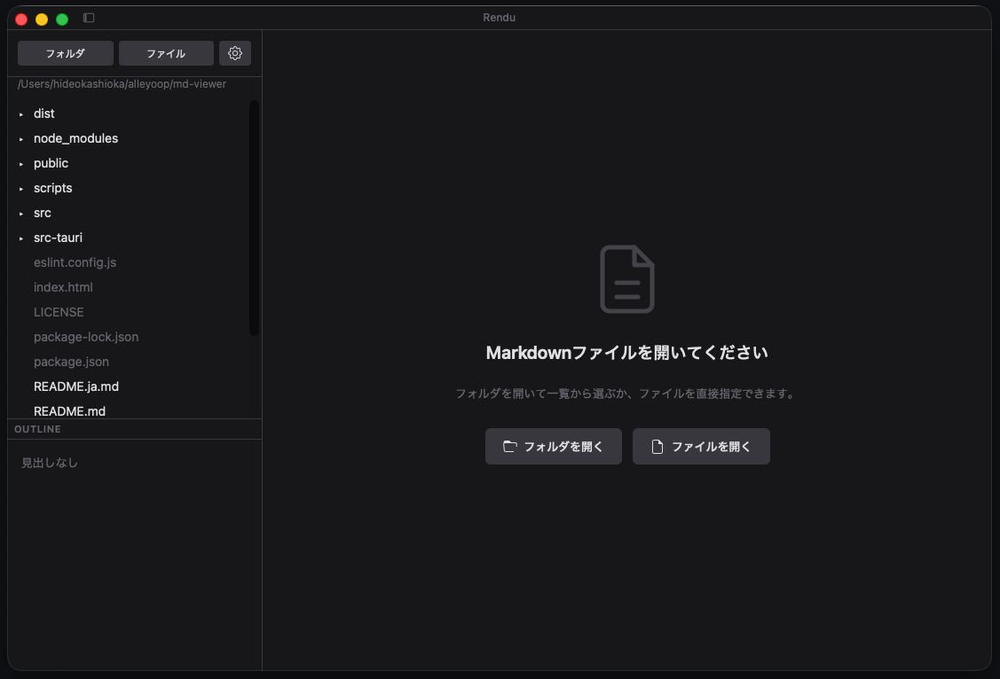

AIが作るドキュメント、きれいに読めるビューア
または: brew install --cask kashioka/tap/rendu

フォルダ内の .md ファイルをツリー表示。クリックですぐプレビュー。
フローチャート、シーケンス図、ER図などをインライン描画。
表示中のページをワンクリックでA4 PDFにエクスポート。
ダーク・ライトテーマ。背景色、文字色、コードブロック色を自由に変更。
見出し一覧をサイドバーに表示。クリックでジャンプ。
テーブル、タスクリスト、取り消し線、シンタックスハイライト対応。